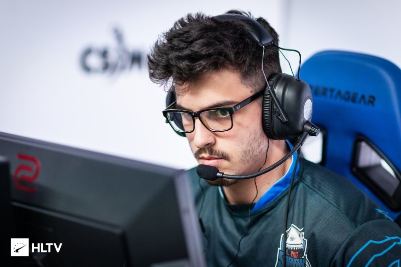

Luken y Rox, los dos primeros argentinos en la historia que disputarán un Major
Rox (Martin Molina) y Luken (Luca Nadotti) charlaron mano a mano con ESPN.com sobre las expectativas de 9z para el Major de Amberes, el nivel que viene mostrando el equipo desde principios de año, la experiencia en la American RMR, la dolorosa salida de Bit y el cruce con Try en Rumania. La participación en el torneo comenzará el próximo 9 de mayo frente a ENCE, 5to en el ranking mundial. LA SINERGIA INGAME QUE SE DESARROLLÓ Rox: "La verdad que se dio bastante rápido. Cuando entró David, que ya estábamos viendo, fue sencillo para mí porque ya había jugado con él en mi anterior equipo, el Real Betis. Con Luca fue más o menos lo mismo porque era amigo mío y de Fran (Frankkaster), nos conocemos hace años y también él había jugado con Maxi en otro equipo, ya sabíamos cómo era y en ese sentido fue bastante fácil adaptarnos. Solo faltaba entrenar y ponernos al día". Luken: "Creo que para el tiempo que tuvimos juntos, se dio bastante rápido. A la vez tuvimos que charlarlo bastante eso para tener ese tipo de sinergia porque Rox y Dav1d, son dos players que juegan bastante rápido, entonces van para adelante como locos y a veces hay que tener una pausa como para seguirlos. Pero al hablarlo como que lo entendieron entonces cada vez que hacemos algo como que se dan un tiempo para esperar al compañero. Después creo que entre ellos dos más que nada también se entendieron muy bien".
 Link a la fuente real